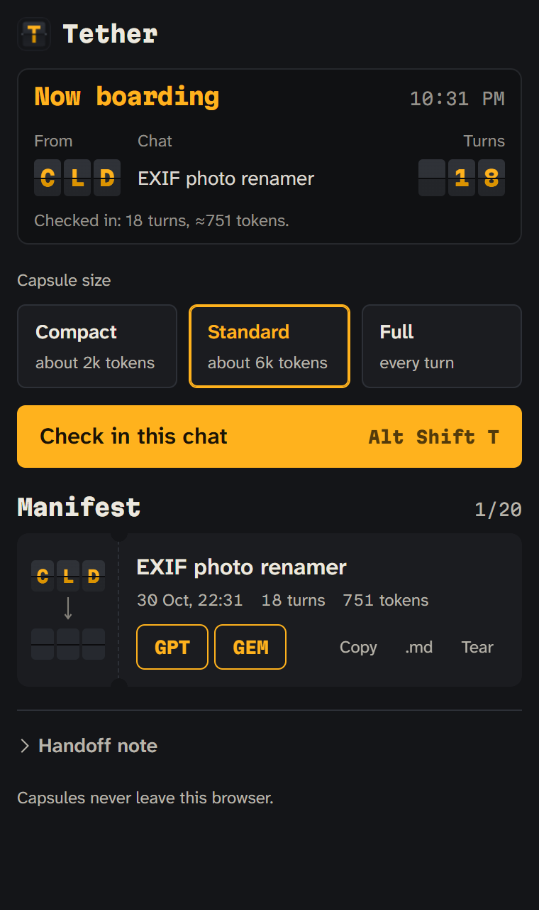
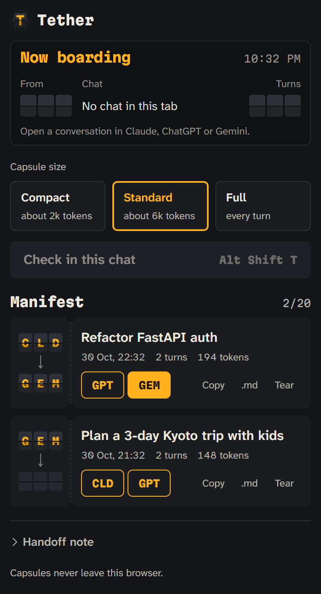
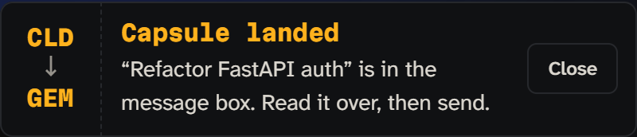
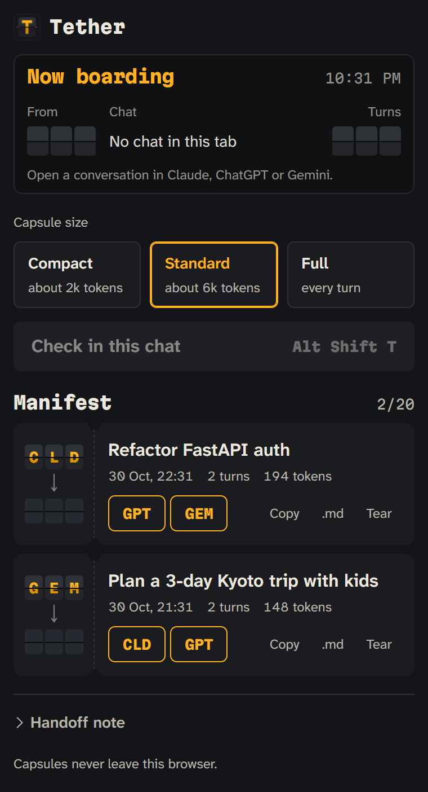

Check in on Claude.
Land on Gemini.
Tether packs the whole conversation into one capsule and types it in.
Try the packer
This packer is the same code the extension runs.
From check-in to landing



Where it works
| Assistant | Address | How Tether reads it |
|---|---|---|
| Claude | claude.ai | Scrolls the chat, because only the turns on screen exist in the page. |
| ChatGPT | chatgpt.com | Reads the current layout and falls back to the older one. |
| Gemini | gemini.google.com | Loads earlier turns first, then types through its editor. |
Needs Chrome 116 or newer. Permissions: storage and these three sites, with no network requests.
Install in a minute
- Get the folderDownload this repository, then open
chrome://extensions. - Load itTurn on Developer mode, choose Load unpacked and pick the
extensionfolder. - Carry a chatOpen a conversation, press Alt Shift T, check it in, then board it to another assistant.
